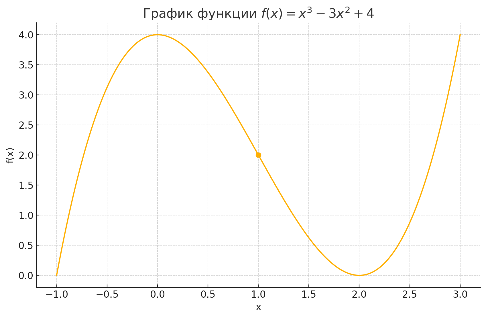
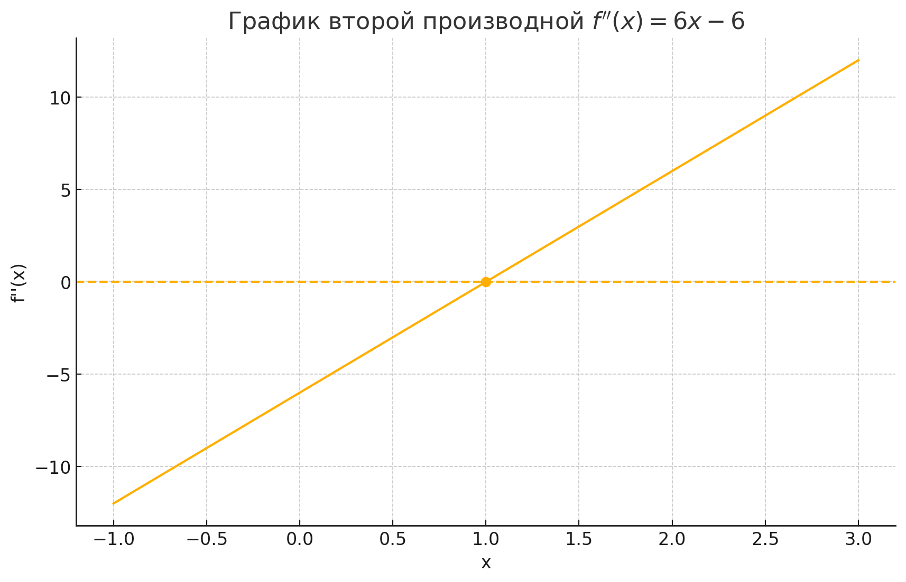

2.14 Точки перегиба графика функции
Что такое точки перегиба?
Точка перегиба — это точка на графике функции, в которой меняется знак её выпуклости (вогнутости). В этой точке график «переламывается»: с выгнутого вверх становится выгнутым вниз или наоборот.
Условия существования точки перегиба
Если функция дважды дифференцируема, то в точке перегиба вторая производная равна нулю или не существует, и при этом происходит смена знака второй производной:
График функции и точка перегиба

Рис. 1. График функции f(x) = x³ − 3x² + 4 с отмеченной точкой перегиба x = 1.
График второй производной

Рис. 2. График второй производной f″(x) = 6x − 6, где видно пересечение с осью
Пример нахождения точки перегиба
Рассмотрим функцию \( f(x) = x^3 - 3x^2 + 4 \). Её вторая производная:
Приравниваем к нулю: \(6x - 6 = 0 \implies x = 1\).
Проверяем знак: при \(x < 1\), \(f''(x)<0\); при \(x > 1\), \(f''(x)>0\). Следовательно, точка \(x=1\) — точка перегиба.